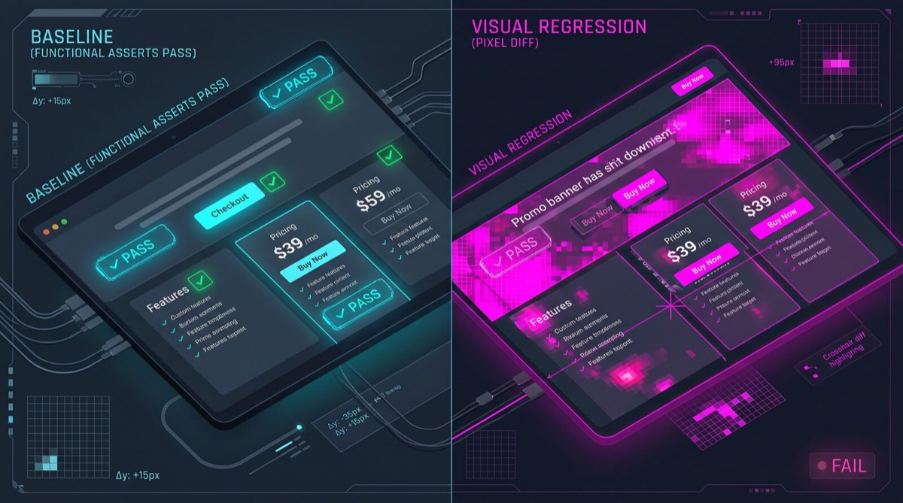

Vizuelno regresiono testiranje: kako uhvatiti UI bagove pored kojih vaši funkcionalni testovi prolaze
Zašto provjere na nivou piksela hvataju greške u rasporedu koje funkcionalni testovi propuštaju, kako ih spriječiti da budu nestabilne i koji alati se zaista uklapaju u vaš pipeline.
Funkcionalni test klikne na dugme „Checkout" i provjeri da se sljedeća stranica učitala. Test prolazi. Ono što ne zna jeste da je dugme sada do pola prekriveno promo banerom koji se nakon izmjene u CSS-u pomjerio šest piksela naniže, pa bi stvaran korisnik na ekranu laptopa morao da pogađa gdje da klikne. Funkcionalni i end-to-end testovi provjeravaju da elementi postoje, da reaguju na događaje i da se prikazuju pravi podaci. Ništa od toga vam ne govori da li stranica zaista izgleda kako treba. Upravo tu rupu popunjava vizuelno regresiono testiranje, i vrijedi razumjeti i šta ono hvata i kako ga timovi čine dovoljno pouzdanim da mu se može vjerovati.

Šta zapravo provjerava
Vizuelno regresiono testiranje napravi snimak ekrana stranice ili komponente, uporedi ga piksel po piksel (ili, sve češće, uz pomoć AI-ja) sa sačuvanom osnovnom verzijom (baseline) i označi sve što se promijenilo. Ne zna šta stranica treba da radi; zna samo kako treba da izgleda.
Zamislite tim koji objavljuje redizajn stranice sa cijenama. Njihov Playwright end-to-end paket testova i dalje prolazi: dugme „Buy now" postoji, može se kliknuti i u DOM-u i dalje vodi na pravi URL. Ali izmjena flexbox-a u zajedničkoj komponenti za raspored spustila je dugme dva reda niže na ekranima užim od 768px, pa se na mobilnom sada nalazi ispod liste funkcionalnosti umjesto pored cijene. Nijedna funkcionalna provjera ne pada, jer ništa nije strukturno pokvareno — dugme je i dalje tu i i dalje radi. Vizuelni diff u odnosu na mobilni baseline to odmah uhvati, jer snimak ekrana jednostavno izgleda drugačije.
Minimalna vizuelna provjera u Playwright-u za tu stranicu mogla bi da izgleda ovako:
import { test, expect } from '@playwright/test';
test('pricing page layout, mobile viewport', async ({ page }) => {
await page.setViewportSize({ width: 375, height: 812 });
await page.goto('/pricing');
// Stabilize before capturing
await page.evaluate(() => document.fonts.ready);
await page.locator('[data-testid="promo-banner"]').evaluate(
el => el.style.animation = 'none'
);
await expect(page).toHaveScreenshot('pricing-mobile.png', {
mask: [page.locator('[data-testid="live-visitor-count"]')],
maxDiffPixelRatio: 0.01,
});
});Opcija mask zacrni element za koji se očekuje da će se mijenjati pri svakom pokretanju (brojač posjetilaca, vremenska oznaka), a maxDiffPixelRatio određuje koliko odstupanje u pikselima je prihvatljivo prije nego što test padne.
Gdje timovi griješe i kako to popraviti
Najveći razlog zbog kojeg timovi odustaju od vizuelnog testiranja nije to što je beskorisno — nego to što postane bučno. Paket testova koji pri svakom pokretanju diže lažnu uzbunu navikne ljude da ga ignorišu, čime gubi svaki smisao. Najčešći uzroci i ono što ih zaista rješava:
- Web fontovi koji se kasno učitaju pomjeraju tekst i prelamanje redova između pokretanja. Prije snimanja sačekajte
document.fonts.readyi provjerite da se fontovi u CI-ju zaista serviraju (a ne vraćaju 404). - Animacije i tranzicije budu uhvaćene usred kadra — spineri, kursori, fade efekti. Isključite CSS animacije i tranzicije u test okruženju, umjesto da se nadate da će se tajming poklopiti.
- Slike koje još nisu dekodirane, ili
srcsetkoji pri različitim pokretanjima izabere drugi fajl, mijenjaju piksele bez ikakvog stvarnog baga. Sačekajte da slike prijave da su učitane i namjerno pokrenite lazy-loaded sadržaj prije snimanja. - Dinamički sadržaj — brojači uživo, relativne vremenske oznake, nasumičan redoslijed — zahtijeva maskiranje, zamrznut sat ili test podatke sa fiksnim seed-om, a ne veći prag tolerancije.
- Razlike u renderovanju između platformi. Anti-aliasing, rasterizacija fontova, pa čak i širina scrollbara razlikuju se između macOS-a, Linuxa i Windowsa (klasični scrollbarovi pojedu otprilike 15px rasporeda koje macOS overlay scrollbarovi ne zauzimaju). Svaki baseline generišite u jednom kanonskom okruženju, obično istoj container slici koju koristi CI, a nikada na laptopu nekog developera.
Iznad svih ovih problema stoji jedna strukturna zamka: vizuelni testovi su skupi za održavanje. Svaka namjerna izmjena dizajna zahtijeva da neko pregleda i ponovo odobri gomilu diffova, a ako se taj pregled pretvori u mehaničko odobravanje („da, izgleda okej, odobri sve"), baseline-ovi se postepeno udaljavaju od stvarnosti i cijela provjera postaje ukras.
Alati zasnovani na AI-ju, kao što su Percy-jev klasifikator diffova ili Applitools-ovi nivoi poklapanja (match levels), smanjuju broj diffova koje čovjek mora da pregleda tako što vjerovatno namjerne izmjene označavaju odvojeno od vjerovatnih bagova. Ali ta pogodnost je tvrdnja proizvođača, a ne garancija — klasifikator koji previše olako označava šum kao „očekivan" tiho će sakriti zaista nedeterministički pipeline, umjesto da vas natjera da ga popravite.
Druga stvarna granica je cijena: alati koji renderuju u oblaku, poput Percy-ja i Applitools-a, naplaćuju po snimku ekrana ili po nivou paketa, što brzo raste kada pokrivate svaku stranicu na svakom breakpointu. Open-source opcije poput Playwright-ovog ugrađenog toHaveScreenshot, Argosa ili BackstopJS-a su besplatne, ali nude slabije renderovanje u više pretraživača i nemaju ugrađen proces za pregled izmjena.
Vizuelno regresiono testiranje je takođe pogrešan alat za provjeru da li su podaci tačni, da li se neki tok uspješno završava ili da li API vraća pravi odgovor — ono vam govori samo da su se pikseli promijenili, a ne zašto, i test koji vizuelno prolazi ne govori ništa o tome da li stranica zaista funkcioniše.
Šta dalje
- Počnite sa jednim tokom sa velikim saobraćajem, a ne sa cijelim sajtom — stranicom za checkout, stranicom sa cijenama ili dashboardom koji se vidljivo i često kvari. Pokušaj da se već prvog dana snimi sve je upravo način na koji se timovi udave u diffovima i odustanu u roku od mjesec dana.
- Stabilizujte prije snimanja. Zamrznite sat, isključite animacije, sačekajte fontove i slike i maskirajte sve što je zaista dinamično. Determinizam popravite na izvoru, umjesto da kompenzujete povećanjem tolerancije za diff.
- Baseline-ove generišite u CI-ju, a ne lokalno. Renderovanje se dovoljno razlikuje između operativnih sistema i grafičkih kartica da će baseline snimljen na nečijem laptopu svima ostalima davati lažne padove.
- Toleranciju podesite za svaki snimak posebno, a ne globalno, i svaki pregled diffa tretirajte kao stvarnu odluku — nekoliko minuta gledanja šta se promijenilo, a ne refleksno „odobri sve" samo da bi se odblokirao merge.